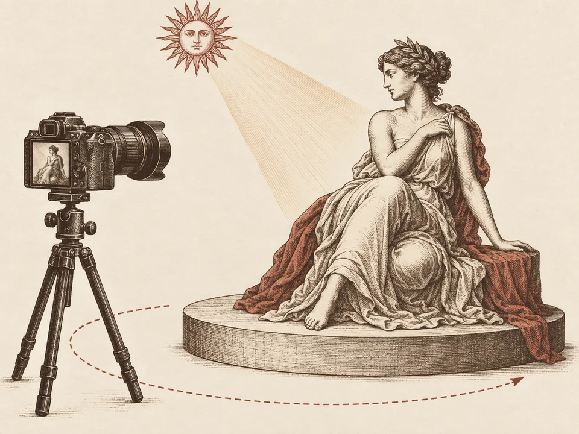
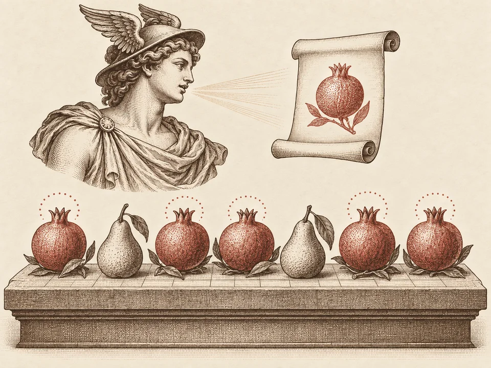
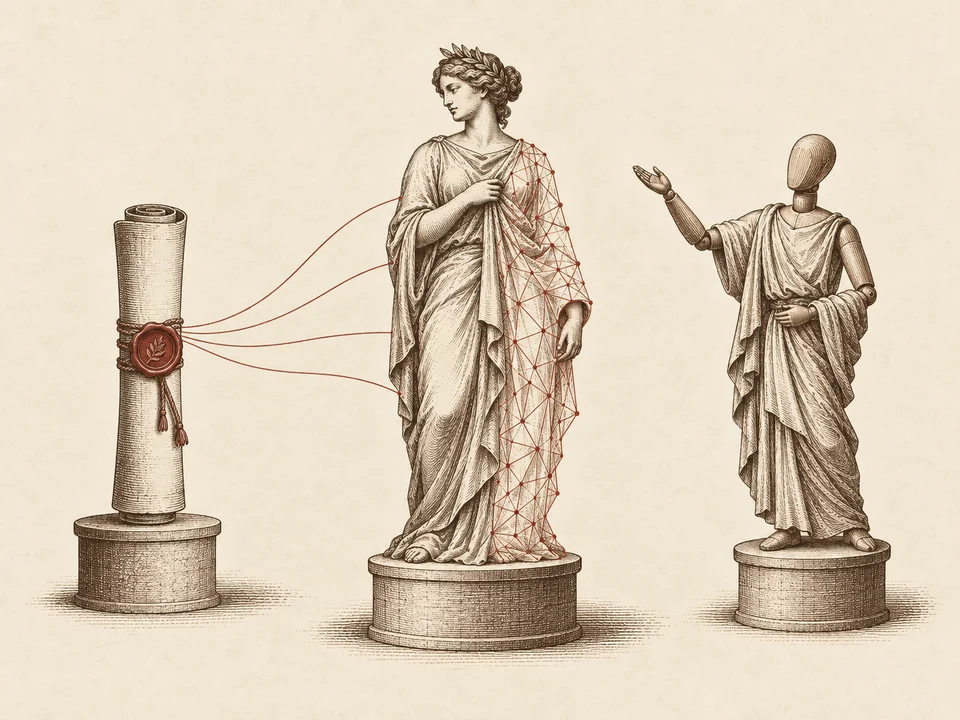

Computational aesthetics · generative artcomputer vision · computer graphics
I study how machines understand and create beauty.
Ruixiang Jiang
PhD candidate at The Hong Kong Polytechnic University, working across generative AI, visual understanding, and the aesthetics of images.
Research archive · 2023 — 2026
Publications

